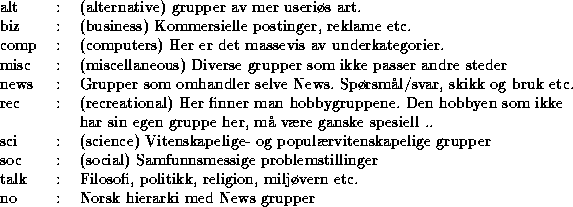

Denne tjenesten har mange navn, og ``USENET News'', ``News'' og ``Netnews'' er noen av dem. Vi skal bare omtale dette som News.
News er også en av de eldste- og i dag kanskje den mest populære tjenesten på Internettet (målt i generert trafikkmengde).
News er egentlig bare en litt annerledes form for elektronisk post, for man sender til og leser fra diskusjonsgrupper i stedet for individuelle personer eller grupper av personer.
Navnet USENET er satt sammen av ordene User's Net, men dette er ikke noe fysisk nettverk slik Internettet er det, men derimot et åpent logisk informasjonsnett der informasjonen distribueres til mange forskjellige fysiske nettverk.
Selv om News er mest utbredt på Internettet, sendes diskusjonsgruppene
f.eks. inn i andre typer systemer som BBSer , online tjenester som CompuServe og America Online og til
andre fysiske nettverk som f.eks. BITNET.
, online tjenester som CompuServe og America Online og til
andre fysiske nettverk som f.eks. BITNET.
Det finnes diskusjonsgrupper for alt mellom himmel og jord (bokstavelig talt!), og garantert grupper av interesse for nesten hvilket som helst fagområde og forretningsområde.
Gruppene er inndelt i store hierarkier, der de viktigste for oss er
